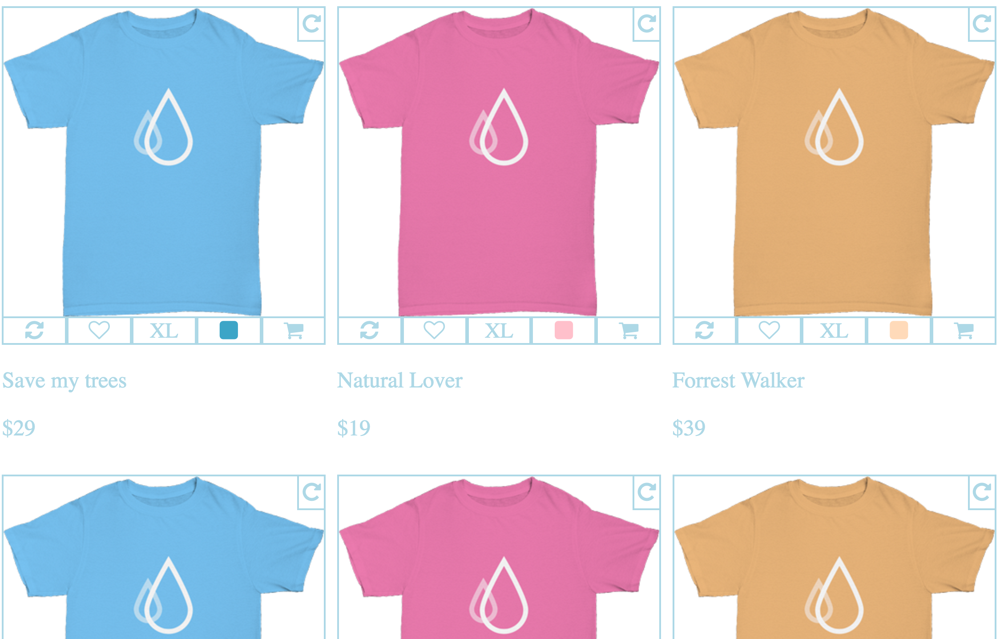
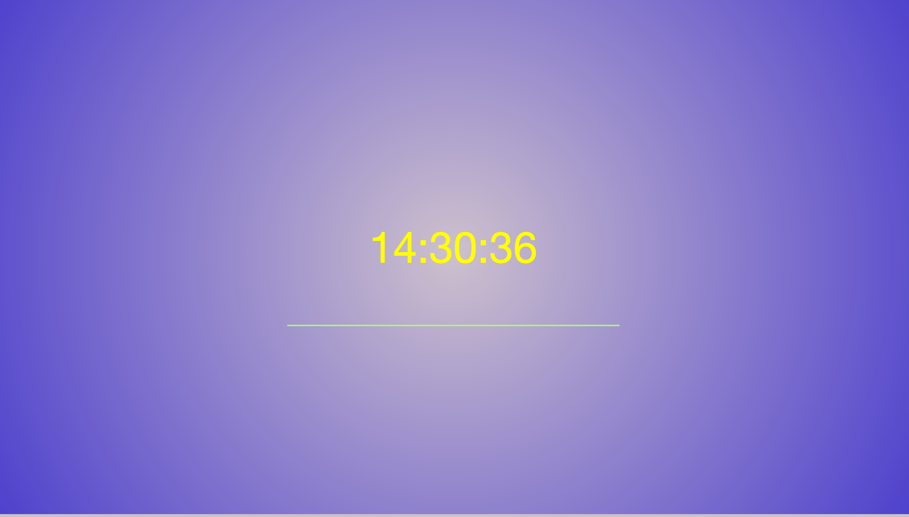
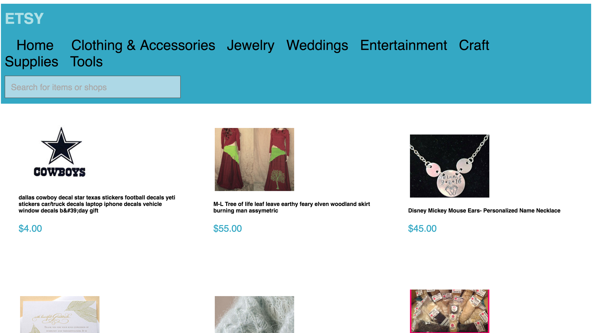
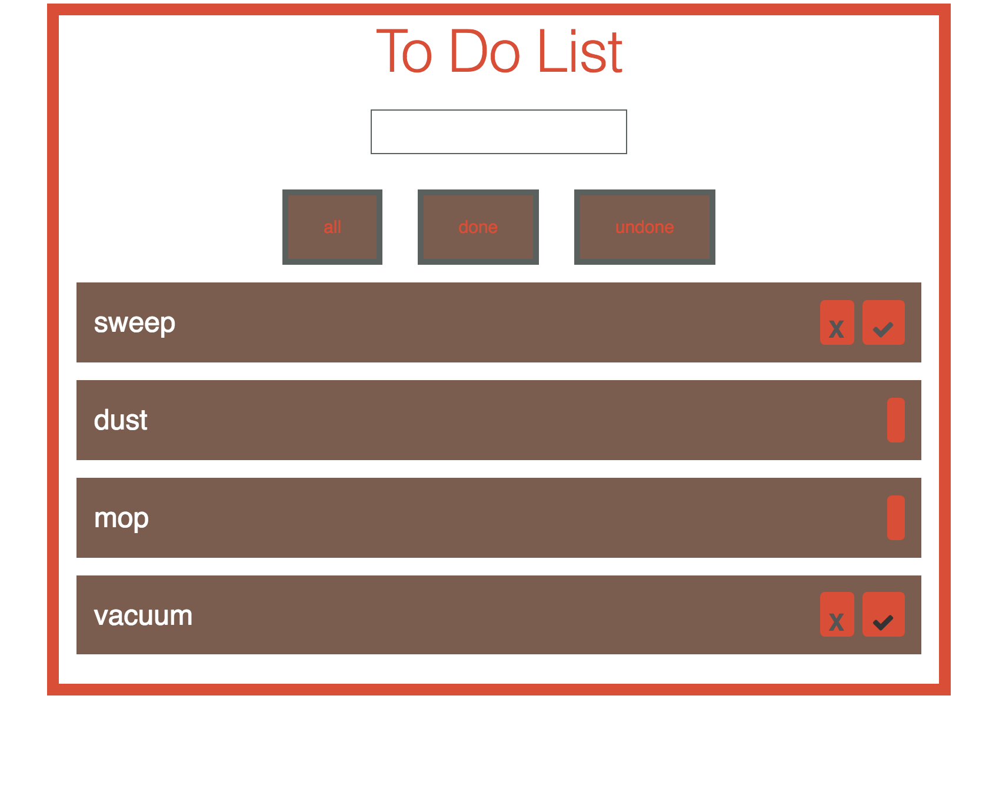
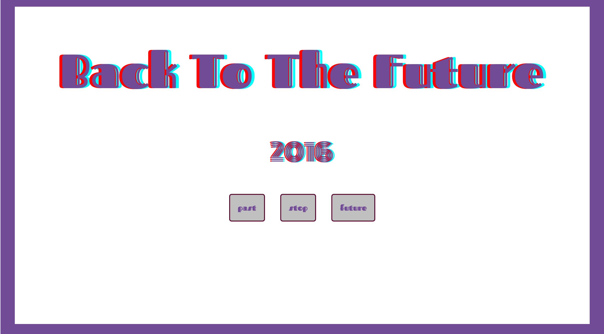
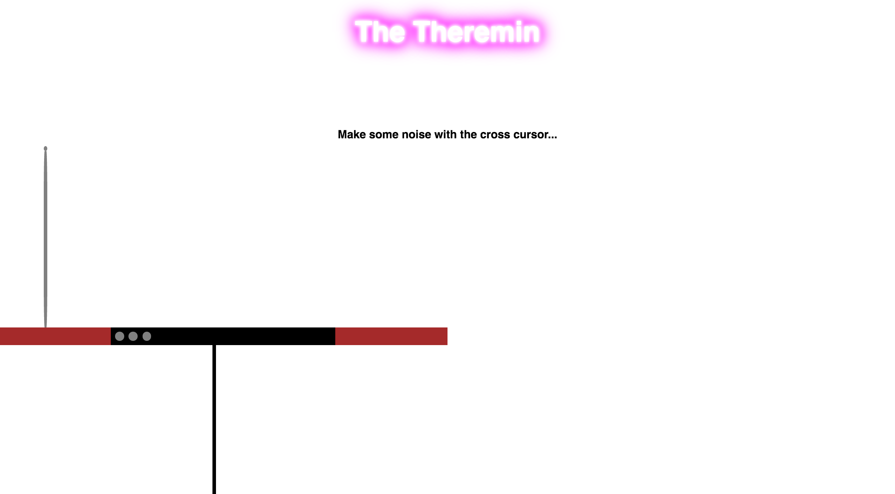

nathaniel flores
contact info:
- tel 832 707 9833
- email floresnathaniel83@gmail.com
Mission
- I want to improve business processes and marketing through web and software development. I'm looking for a position on a team as a front-end developer to improve business processes and marketing for e-commerce organizations by developing better web experiences, EAS (enterprise application software) and SaaS (Software as a service)
About me
- For the past 10 years I have built a career in retail management and customer service. I have always had a passion and curiosity for information technology and computers and how it relates to business models and processes. At the beginning of this year I decided to make a change. I really wanted to challenge myself and get out of my comfort zone. I started to research different areas in IT and fell into many hours of coding tutorials. It was then that I realized how much I love the craft of programming. I think its amazing what one can build that can solve many problems facing businesses and even society today. That is something I want to be a part of.
Experience
- I am a graduate from the Front End Engineering program at The Iron Yard. I have a degree in International Business. My experience in management gives me the unique ability to remain communicative, flexible and open minded on a dynamic team to efficiently reach diverse solutions. My time at The Iron Yard gives me the confidence to break down problems systematically and to quickly learn different tools, libraries and frameworks to get solutions in a constantly changing environment. I continue to learn everyday I code and the projects below will show my progression from day one to the creation of a my first full stack application.
Featured projects
-
T-Shirt
 A complex multi-column fully responsive design layout from scratch. All UI interactions are made with pure css.Tech: HTML and CSS
Click to view project on the web or go to GitHub for the code
-
Time
 My version of a simple clock. Demonstrates functional programming methods (functions, loops/arrays, variadic behavior), use of DOM APIs, approaches of CSS layout, animation, transitions and ability to breakdown a simple process of mathematical steps into a series of statements in JS.Tech: Javascript, HTML and CSS
Click to view project on the web or go to GitHub for the code
-
Etsy Clone
 An app that consumes the Etsy-API and creates a robust user experience with multiple views and user interactions. Demonstrates use of promises and AJAX methods.Tech: Javascript, HTML and CSS
Tools: jquery, backbone, mvc architecture
Click to view project on the web or go to GitHub for the code
-
To-do-list
 A highly interactive application for managing a user's pending tasks.Tech: Javascript, HTML and CSS
Tools: react, backbone, mvc architecture
Click to view project on the web or go to GitHub for the code
-
Time Machine
 A UI interface for a time machine.Tech: Javascript, HTML and CSS
Tools: react
Click to view project on the web or go to GitHub for the code
-
Theremin
 I made this one just for fun. A virtual theremin inspired by a web demo and my love for music. Have fun and make some music!Tech: HTML and CSS
Tools: web audio api ( I had alot of fun exploring this API and hope to see more of what it has to offer. So many possiblities. )
Click to view project on the web or go to GitHub for the code
-
Vinyl Pi
 A full stack trading application for vinyl aficionados. Users are able to trade records and share their story about how they got into collecting records. Hopefully this can inspire further exploration into underappreciated genres and record labels.
A full stack trading application for vinyl aficionados. Users are able to trade records and share their story about how they got into collecting records. Hopefully this can inspire further exploration into underappreciated genres and record labels.
Tech: Javascript, HTML and CSS
Tools: react, underscore, backbone, jquery, mongoose, express, mongoDB, flux architecture
Click to view project on the web or go to GitHub for the code